Schritt-für-Schritt-Anleitung zur Einrichtung des Solarmanagers auf deinem Raspberry Pi oder Server.
Raspberry Pi 4 oder neuer mit Raspberry Pi OS (Debian-basiert). Alternativ jeder Linux-Server.
Für die Installation und für Wetterdaten/Prognosen. Der Betrieb läuft lokal.
SSH-Zugang zum Pi bzw. Server für die Einrichtung und Verwaltung.
| Docker (empfohlen) | Nativ | |
|---|---|---|
| Aufwand | Ein Befehl | Ein Befehl |
| Updates | Einfach per Script | Per Script |
| Isolation | Container-basiert | Direkt auf dem System |
| Verwaltung | Portainer (Web-UI) | systemd / SSH |
| Betriebssysteme | Debian, Ubuntu, RHEL, Fedora, Arch, openSUSE | Debian / Raspberry Pi OS |
Docker vereinfacht die Installation und Updates auf einen einzigen Befehl. Alle Abhängigkeiten werden automatisch eingerichtet.
Per SSH auf dem Pi einloggen und folgenden Befehl ausführen:
wget https://raw.githubusercontent.com/BBessler/Solarmanager/main/install/setup_docker.sh
chmod +x setup_docker.sh
./setup_docker.sh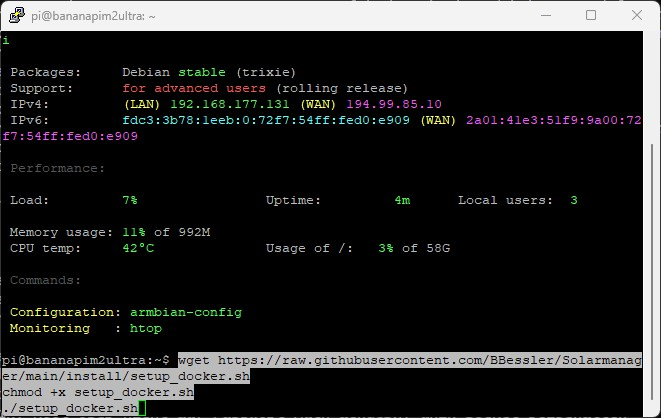
SSH-Verbindung zum Raspberry Pi
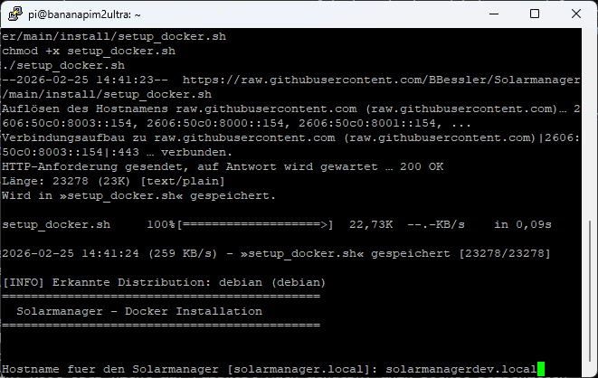
Script herunterladen und ausführen
Das Script fragt interaktiv nach dem gewünschten Hostnamen und Datenbankpasswort. Der Hostname wird für den Zugriff im lokalen Netzwerk verwendet (z.B. solarmanager.local).
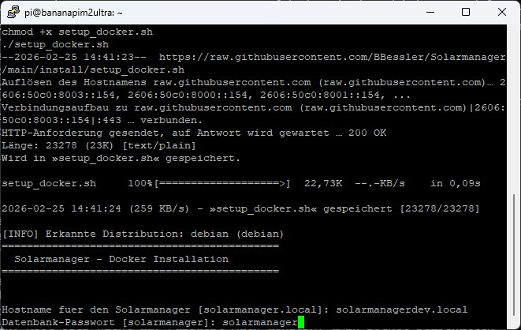
Hostname festlegen
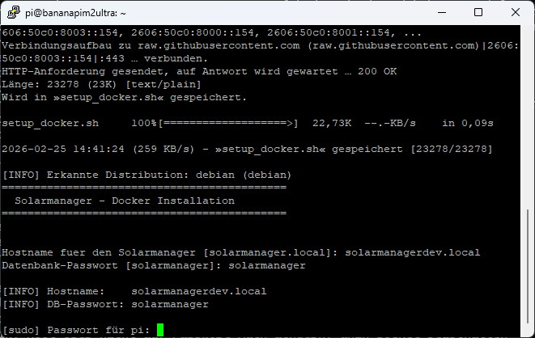
Datenbankpasswort setzen
Falls Docker noch nicht installiert war, wird es automatisch eingerichtet. Danach muss man sich einmal neu einloggen (SSH-Session schließen und öffnen) und das Script erneut ausführen.
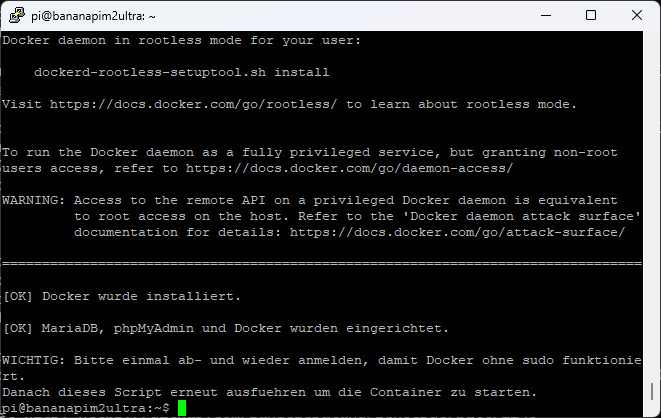
Status vor dem Neu-Einloggen
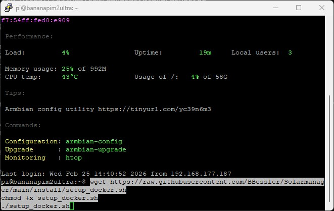
Nach dem Neu-Einloggen
Nach dem Neu-Einloggen das Script erneut starten. Es erkennt automatisch, dass Docker bereits installiert ist und richtet den Solarmanager ein.
./setup_docker.sh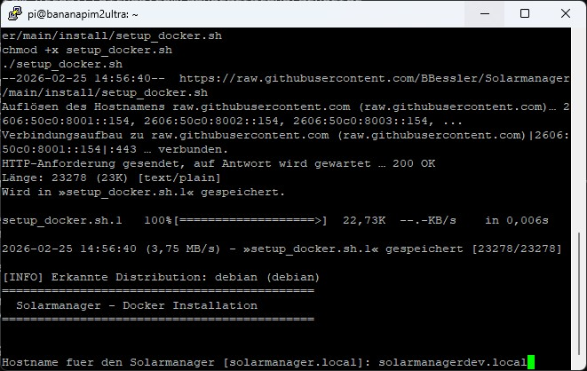
Zweite Ausführung des Scripts
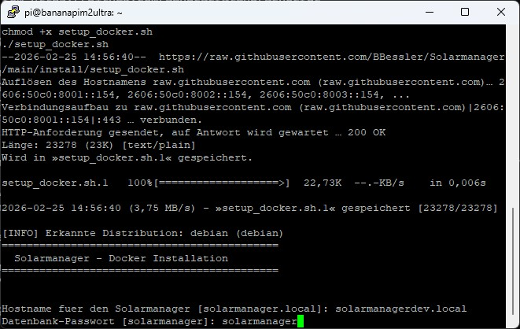
Hostname und Passwort bestätigen
Das Script lädt die neuesten Releases herunter, startet die Container und zeigt am Ende die Zugriffs-URLs an. Nach 2–5 Minuten ist der Solarmanager im Browser erreichbar.
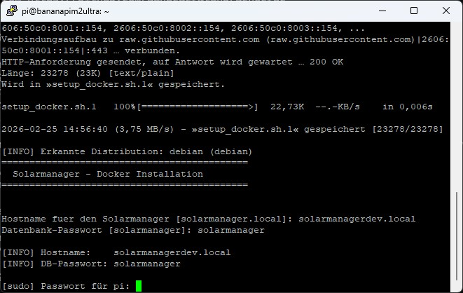
Backend wird gestartet
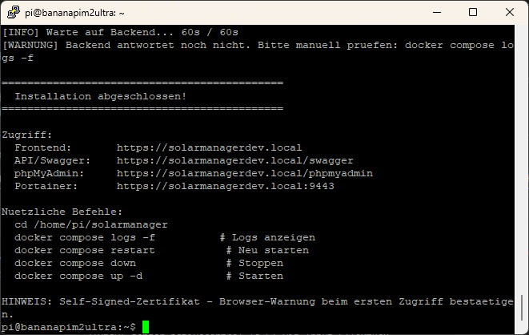
Zusammenfassung mit Zugriffs-URLs
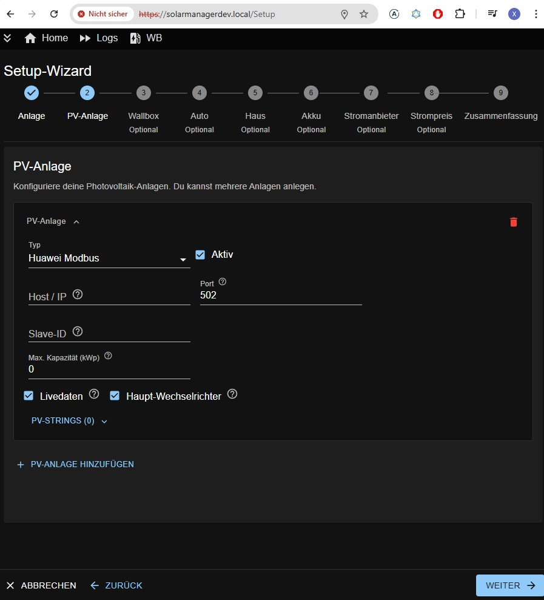
Setup-Wizard im Browser — Solarmanager ist bereit!
Um den Solarmanager auf die neueste Version zu aktualisieren:
wget -O update_docker.sh https://raw.githubusercontent.com/BBessler/Solarmanager/main/install/update_docker.sh
chmod +x update_docker.sh
./update_docker.shFür die Beta-Version (Pre-Release) den --beta-Parameter anhängen:
./update_docker.sh --betaDas Standard-Update installiert nur stabile Releases — ein Produktivsystem bekommt nie versehentlich eine Beta-Version.
# Container-Status prüfen
cd ~/solarmanager && docker compose ps
# Solarmanager-Logs anzeigen
docker compose logs -f solarmanager
# Alle Logs anzeigen
docker compose logs -f
# Neu starten
docker compose restart
# Stoppen / Starten
docker compose down
docker compose up -dAlternative zur Docker-Installation. Installiert alle Komponenten direkt auf dem System. Geeignet für Raspberry Pi OS / Debian.
Per SSH auf dem Raspberry Pi einloggen und folgenden Befehl ausführen:
wget https://raw.githubusercontent.com/BBessler/Solarmanager/main/install/setup_solarmanager.sh
chmod +x setup_solarmanager.sh
sudo ./setup_solarmanager.shFalls eine bestehende Datenbank-Sicherung (solardb.sql) importiert werden soll:
wget https://raw.githubusercontent.com/BBessler/Solarmanager/main/install/setup_DB.sh
chmod +x setup_DB.sh
sudo ./setup_DB.shwget -O update_solarmanager.sh https://raw.githubusercontent.com/BBessler/Solarmanager/main/install/update_solarmanager.sh
chmod +x update_solarmanager.sh
sudo ./update_solarmanager.shDas Update-Script lädt die neuesten Releases, sichert die Frontend-Konfiguration und startet das Backend neu. Für Beta-Versionen: sudo ./update_solarmanager.sh --beta
# Backend neu starten
sudo systemctl restart solarmanager.service
# Backend-Status prüfen
sudo systemctl status solarmanager.service
# Backend-Logs anzeigen
sudo journalctl -u solarmanager.service -fhttps://solarmanager.local
https://solarmanager.local/swagger
https://solarmanager.local/phpmyadmin
https://solarmanager.local:9443
https://solarmanager.local
https://solarmanager.local:453
https://solarmanager.local/phpmyadmin
Da ein Self-Signed-Zertifikat verwendet wird, zeigt der Browser beim ersten Zugriff eine Sicherheitswarnung an. Diese muss einmalig bestätigt werden:
Chrome/Edge: „Erweitert" → „Weiter zu … (unsicher)"
Firefox: „Erweitert…" → „Risiko akzeptieren und fortfahren"
Safari: „Details einblenden" → „Diese Website besuchen"
Nach dem Start kann es 2–5 Minuten dauern, bis alle Dienste erreichbar sind, da die Datenbank beim ersten Start eingerichtet wird.